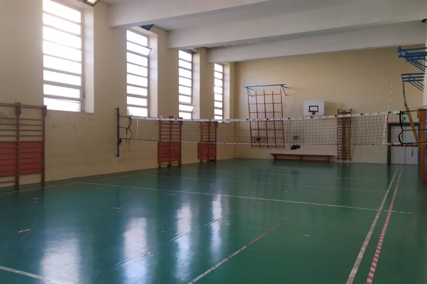
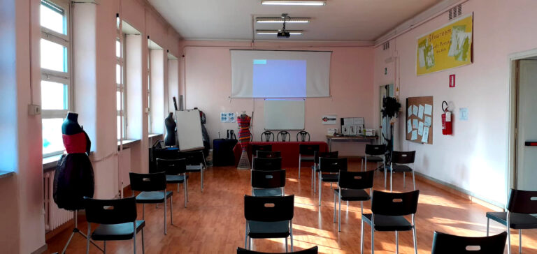
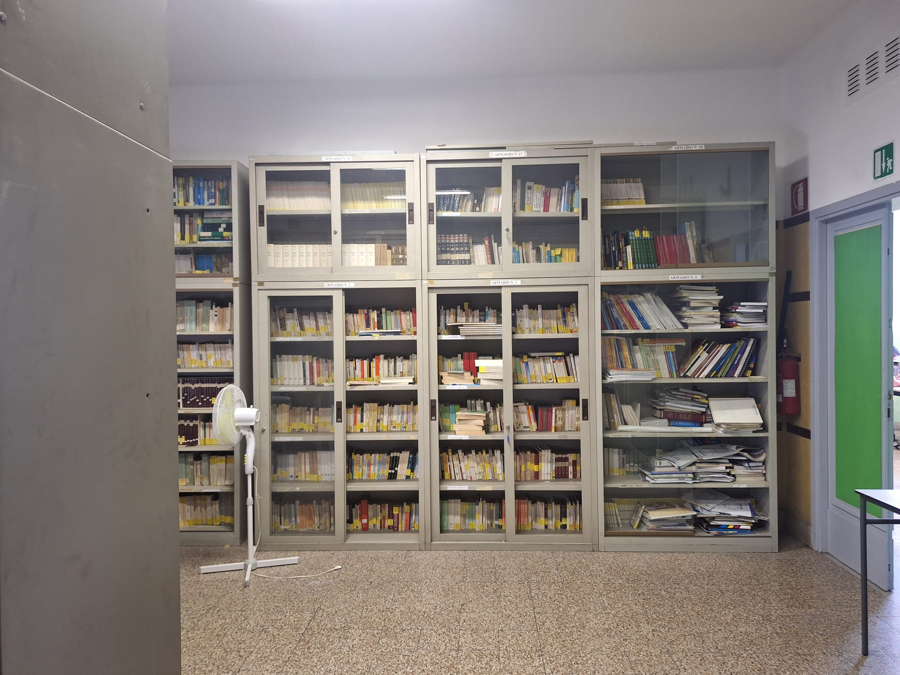
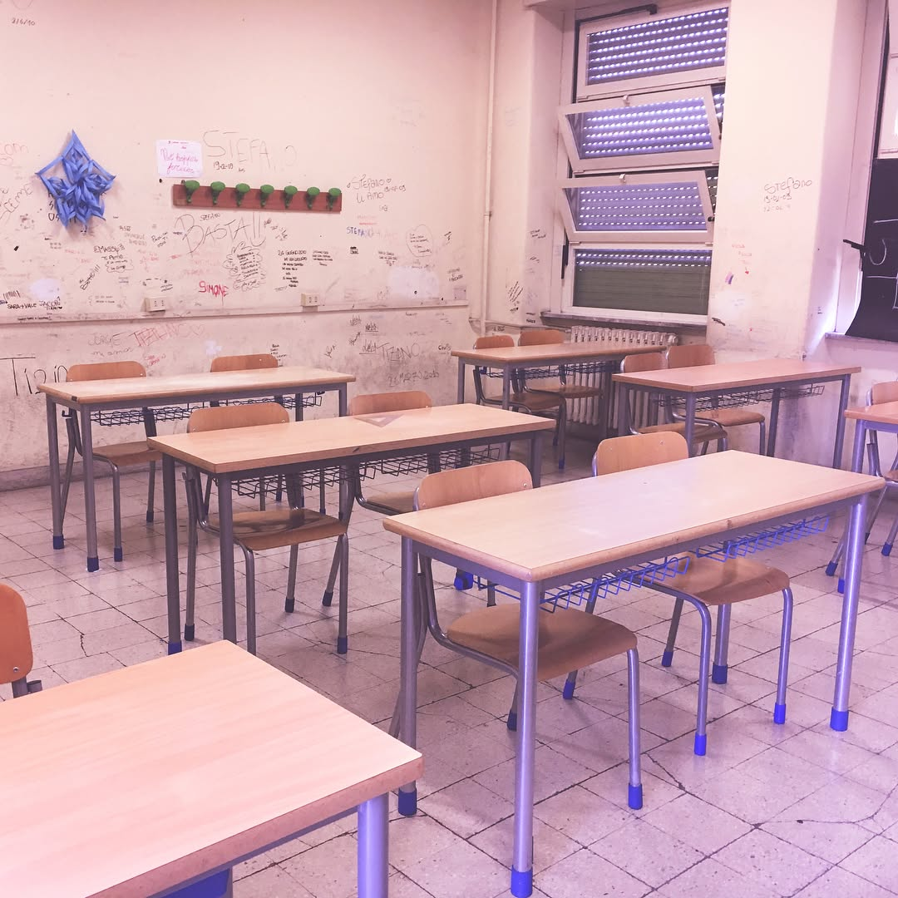
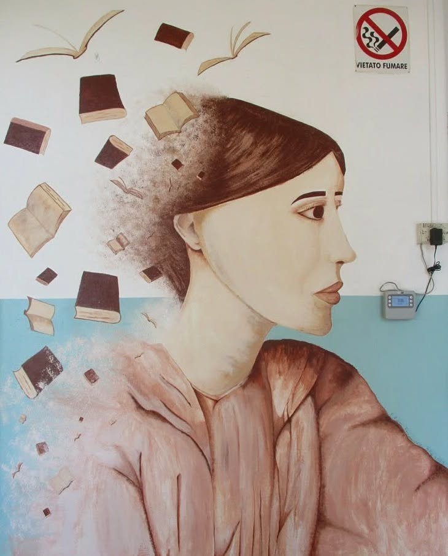

La nostra scuola, ovvero la sede succursale dell’istituto Giorgi Woolf di via Palmiro Togliatti, si trova in zona Pigneto, in circonvallazione Casilina 119, tra le principali arterie del settore est della città, ovvero via Prenestina e via Casilina, a ridosso della fermata Metro C “Pigneto” e della parte pedonale del quartiere, in cui si trovano tutti i locali e i ristoranti del posto. Facciata sede Virginia Woolf
La scuola è ospitata in un vecchio edificio, il quale ha una forma assomigliante a una C. All’esterno è somigliante a una vecchia caserma, con le mura spoglie e piatte data la assenza di balconi o guglie di ogni tipo. L’edificio è databile tra gli anni 50 e gli anni 60 del 900’. Ha 4 piani + uno interrato e ospita, oltre alla nostra scuola, l'ITS Lazio Digital e una scuola primaria. Alla nostra scuola è permesso accedere anche alla palestra dell’edificio, la quale contiene un campo regolamentare di pallavolo e ospita gli allenamenti e le partite in casa della società sportiva Free Time Volley. Non abbiamo una parte esterna, oltre a quella antistante l’entrata, poiché il cortile interno dell’edificio è riservato alla scuola primaria.
All’interno l'edificio, incluse le parti a cui non ci è permesso accedere, per esempio il piano primo, è strutturato con dei lunghi corridoi a cui si accede alle classi e ai laboratori della scuola. Nella parte dell'edificio dedicata alla nostra scuola, i piani sono collegati da una lunga rampa di scale, più lunga del normale data l’altezza maggiore dei soffitti, la quale al centro ospita un vecchio ascensore che i docenti e il personale può utilizzare.
La scuola ospita quattro indirizzi di studio diversi: il Liceo Scientifico opzione Scienze Applicate, l’ITI indirizzo Informatica e indirizzo Grafica e Comunicazione e l’Istituto Professionale indirizzo Industria e Artigianato per il Made in Italy. Questa lista non comprende tutti gli altri indirizzi dell’istituto, che per la maggior parte sono ospitati nella sua sede centrale.
Al momento la scuola ospita 14 classi suddivise su tre piani, ed è dotato di un laboratorio sartoriale, due laboratori di informatica, un laboratorio di grafica, un laboratorio di fotografia, un laboratorio di Scienze, una biblioteca contenente moltissimi libri e volumi, due aule più grandi in cui si possono tenere conferenze e eventi con più classi e 5 bagni più quelli della palestra, oltre a una ventina di aule di dimensioni variabili per le normali lezioni.



PalestraUna delle due aule grandi per eventi e progettiBiblioteca
La scuola ha un clima e un ambiente molto ospitale e gradevole, con mura pitturate con colori accesi e decorate da vari dipinti e graffiti fatti dagli studenti della scuola, oltre alla massiva presenza di finestre su tutti i lati dell’edificio che permettono a molta luce naturale di entrare. Le uniche cose un po’ lasciata andare sono il pavimento, lo stesso che si può vedere in vecchie foto della scuola, il quale presenta nelle mattonelle molte crepe, rotture e sporcizia, ma comunque fa il suo discreto lavoro permettendo di non risaltare troppo lo sporco e dando un clima piacevole alla scuola e le finestre, di tipo vasistas, che sono molto vecchie, non lasciano passare molta aria e all’esterno sono sporche, non permettendo di vedere fuori quando il sole batte direttamente su di esse.
 Foto che mostra il grado di rovina delle mura
Le mura sono state ripitturate e la scuola per intero riqualificata dalla nostra preside nel 2018, anno in cui ha inglobato nello storico itis Giovanni Giorgi anche il nostro plesso, lasciato un po’ a se stesso dal precedente istituto proprietario, l’Europa Woolf. Cercando su Instagram si possono vedere vecchie foto scattate all’interno delle classi della scuola e si possono notare le mura rovinate con graffiti e scritte.
A proposito di murales, all'estero dell'edificio sulle mura prive di finestre e un tempo spoglie si possono ammirare diversi imponenti murales, che sono parte importante della cultura della street art di Roma. Infatti moltissimi street artists hanno il proprio studio nel quartiere, che è di seguito diventato uno dei principali centri della street art di Roma.

Veduta di un murales da via de MagistrisMurales all'ingresso della scuola raffigurante Virginia WoolfVeduta di un murales da via de Magistris
Indirizzi di studio
Nella nostra scuola sono presenti quattro indirizzi di studio diversi: il Liceo Scientifico opzione Scienze Applicate, l’iti indirizzo Informatica articolazione informatica, l'iti indirizzo Grafica e Comunicazione e l’Istituto Professionale indirizzo Industria e Artigianato per il Made in Italy.
Una descrizione più accurata degli indirizzi di studio attivi si trova nella pagina apposita.